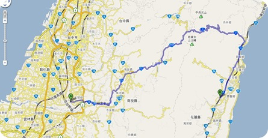
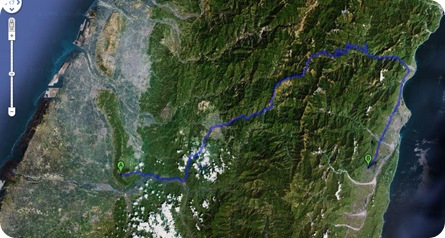

台南新營－南投名間－花蓮鐵人的家
2 月 12 日早上七點多搭上七點四十的火車南下到台南新營，準備和佩騎回花蓮，不過這次當然不走回頭路，而是打算穿過聳立在臺灣東西部之間高聳的中央山脈，由中橫公路騎回花蓮。
第一天：101 公里
十一點多從新營出發，就著南部炎熱的太陽往北前進。一開始前往嘉義的省道是枯燥的筆直道路，正中午的南部太陽威力極大，道路兩旁是單調的荒地、田地，只能忍著滴到眼裡的汗水無可奈何地往前騎。
延著台一線騎進斗南後，轉往台 3 線，下午四點不到就抵達南投民間，不過要騎到騎到佩的姑姑家則還有一連串的坡要爬。那是位於南投名間位於崧柏嶺上的受天宮附近的眾多茶行之一，據說此廟香火鼎盛，過年期間香客絡繹不絕，晚間吃完飯到廟旁散步時，已有眾多香客在沖天炮和一串串炮竹的引領下，緩緩地走進廟口來。外來的香客一來，當然為四周的商家帶來經濟上的效益，但同時也帶來的可怕的噪音、垃圾……
佩趕著在八點前回去看《光陰的故事》，我跟著看到十點，然後來到三樓睡覺的地方，我捨不得睡覺，守著檯燈繼續讀《尋秦記》第七卷，不知不覺就讀到十二點多，讀到項少龍與稷下劍聖曹秋道在夜間偶遇的對戰結束，就只好忍下心爬上床。明天可是要開始進入中橫了！

早上五點半起床，摸黑從崧柏嶺一路沿著沒什麼彎道的縣道往下溜到台 3 線，會忘記自己騎在腳踏車上，簡直就像長著翅膀在空中划行一樣。轉往台 16 線後，太陽逐漸從山後跑出來，我們向著陽光往東騎，汗水和路旁砂石車捲起的塵沙連著光線直直地從正面打來，那山的後面就是我們的終點－－花蓮。
從台 16 轉進縣道 131，經過一翻上上下下的掙扎後，轉到台 21 線不久，大約十點，抵達埔里－－中部橫貫公路的入口。我們先在麥當勞叔叔的庇護下吃了第二頓早餐，再去 7-11 屯積補給品，準備橫過三千多公尺的高山，往花蓮出發。
#####
無止境的陡坡(南投名間至花蓮鐵人的家：250 公里)

從埔里進入台 14 線開始，坡度開始增加，一個小時後就出現只能以時速十公里以下前進的大陡坡，為了配合佩的速度，一個小時只能前進大約六公里左右，再加上休息，騎到下午兩點才到達清淨農場。在一旁的 7-11 稍作休息後就繼續往上爬著似乎無止盡的坡道，轉過一個又一個髮夾彎，然後再上升好幾公尺。
下午三點多，騎至台 14 甲十公里處，路旁（也就是在 2055 公尺的山上）出現許多民宿，我思考著是否該停下來休息，明天再繼續？因為至少還有 130 多公里才能到得了鐵人的家。而佩應該不太可能撐到那時候，而且晚上在中橫騎車也太危險了……等等多方考量，就停下來問了幾間民宿的價錢，最後選定一個晚上一人五百的價錢，提早在三點四十停下來休息。一停下來，心情就馬上無比的輕鬆，原本要騎到花蓮的壓力就沒那麼大了。反而，在中橫上慢慢散步走去全台灣最高的 7-11 吃晚餐時，就比在腳踏車上痛苦地掙扎要愉快上百倍，後來洗好澡躺在床上繼續讀《尋秦記》時就會有「還好有決定停下來」的心情。尤其隔天繼續上路後，發現接下來的路更陡，一路上更是荒涼，無處可借宿之後，更覺得昨天做了正確的決定。
隔天早上六點多起床，七點多出發時，天是灰灰暗暗的，是個沒有陽光的日子。坡道還是以可怕的傾斜角度呈現在遠方，沒有盡頭的一段又一段。騎了近兩個小時後，開始進入雲層之中，能見度迅速遞減！在名為「鳶峰」的休息處 （海拔 2800 公尺），停下來等佩，順便再吃一點東西。一停下來，身體的溫度一降，就發現氣溫明顯低了很多，等佩的時候就開始發抖起來。佩到達後，有一對住在埔里的夫婦很熱情地請我們喝咖啡和吃麵包、點心，加上剛買的熱玉米，身體一下就暖和起來了。著實感謝這對夫婦，這是最實際的「加油」了。邊帶著這樣的感謝，邊想像著他們在結婚多年後（據他們說，最小的孩子都快比我大了），經過這麼多的歲月，在這樣的日子裡，遇到結伴出遊的兩人，感覺他們真是幸福的一對佳侶啊！
霧愈來愈大，上昇的坡道消失在雲霧後面，吃力地踩踏，看不見盡頭，不知要這樣地踩到什麼時候。終於在十點四十幾分騎到了台灣公路的最高點－－武嶺（海拔 3275 公尺）。霧水把全身都霑濕了，氣溫是零度，一停下來等著佩時，就好像不動地浸在冬天裡的游泳池裡一樣教人難以忍受。因為實在太難以忍受了，就一邊做著蹲、站交替的運動，一邊期待佩趕快出現。所然霧氣濃厚，但還是可以感覺出有很多人與車在身旁移動，近一點的人看著我扶著車做類似交互蹲跳的運動，都投以好奇的眼光。終於，佩出現了。
終於，開始下坡了。也是「可怕」的開始，濃重的霧、陡降的坡與零度的氣溫，使得手指不聽使喚，根本沒法好好按剎車，而且計時車的剎車把又是低風阻設計的「細尖款」，陡下坡時用力按下，好像手指被刀割一樣尖銳的疼痛，不得已，途中還停下來讓手指恢復知覺才敢繼續往下滑去。
還好隨著海拔高度快速且持續地下降（不到一個小時就降了 1500 公尺），溫度也愈來愈暖和，手指也不再像之前般發出難以忍受的疼痛，接著我們就一刻不停地往下溜去，一口氣（大約兩個小時）就溜到了熟悉的天祥，很快地在四點左右就抵達熟悉的志學街，填飽肚子，回到了久違的鐵人之家。